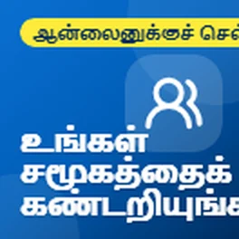
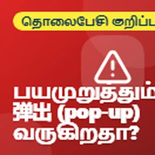

இந்தப் பக்கம் தானாக மொழிபெயர்க்கப்பட்டது. ஏதாவது சரியாக இல்லையென்றால், எனக்குத் தெரியப்படுத்துங்கள்.
ब्रिडलिंगटन और ईस्ट राइडिंग में मुफ्त टेक टिप्स
फ़ोन, कंप्यूटर और ऑनलाइन सुरक्षित रहने के लिए सरल अंग्रेजी में मदद। मुफ्त, साइन अप करने के लिए कुछ नहीं।
அ最新的 குறிப்புகள்

Dyspraxia: help for adults and students
It's the last day of Dyspraxia Awareness Week, and I wanted to finish by sharing some support for adults and students, because dyspraxia doesn't stop...

Have a pendant or fall alarm? Check it now
I wanted to share something important for anyone who has a personal alarm, like a pendant or a fall alarm, that works through their home phone line.

இலவச புத்தகங்கள் மற்றும் நீங்கள் கேட்கக்கூடிய டிவி
தேசிய பிரைல் வின் நான்காவது நாள் இது, மேலும் இன்றைய குறிப்புகள் நீங்கள் கேட்கக்கூடிய புத்தகங்கள், வானொலி மற்றும் டிவியில் பற்றியவை.

உங்கள் பிராட்பேண்ட் மற்றும் தொலைபேசி கட்டணங்களைக் குறைக்க இலவச கருவிகள்
இன்று வறுமை ஒழிப்புக்கான சர்வதேச நாள், எனவே உங்கள் பிராட்பேண்ட் செலவைக் குறைக்க உதவும் சில இலவச கருவிகளைப் பகிர்ந்து கொள்ள விரும்புகிறேன்...

டிஸ்ப்ராக்சியா: வெளியே செல்வதற்கான தொழில்நுட்பம்
டிஸ்ப்ராக்சியா விழிப்புணர்வு வாரத்தின் ஆறாவது நாள் இது, மேலும் வெளியே செல்வதற்கு உதவும் சில தொழில்நுட்பத்தை இன்று பகிர்ந்து கொள்ள விரும்புகிறேன்.

உங்கள் தொலைபேசி உங்களுக்குப் படிக்கச் செய்யுங்கள்
தேசிய பிரைல் வின் மூன்றாவது நாள் இது, மேலும் உங்கள் தொலைபேசி அல்லது கணினி உங்களுக்கு விஷயங்களை சத்தமாகப் படிக்க உதவும் சில இலவச வழிகளை இன்று பகிர்ந்து கொள்ள விரும்புகிறேன்.

டிஸ்ப்ராக்சியா: நகர உதவும் செயலிகள்
டிஸ்ப்ராக்சியா விழிப்புணர்வு வாரத்தின் ஐந்தாவது நாள் இது, மேலும் நகர உதவும் குறிப்புகள் அனைத்தும் நகரத்தைப் பற்றியது.

உங்கள் தொலைபேசியுடன் உணவு மூலம் பணத்தை சேமிக்கவும்
இன்று உலக உணவு தினம், அதனால் உணவு மற்றும் நல்ல உணவுகள் வீணாவதைத் தடுக்க உங்களுக்கு உதவக்கூடிய சில இலவச செயலிகளைப் பகிர்ந்து கொள்ள விரும்புகிறேன்.

உங்களுக்கு ஒரு வாழ்க்கையை காப்பாற்றக்கூடிய இலவச செயலிகள்
இன்று இதயத்தை மீண்டும் தொடங்குதல் தினம், அதனால் CPR கற்றுக்கொள்ளவும், யாராவது இதயத் துடித்தால் உதவத் தயாராக இருக்கவும் உதவும் சில இலவச செயலிகள் மற்றும் வலைத்தளங்களைப் பகிர்ந்து கொள்ள விரும்புகிறேன்.

பார்வை குறைபாடு உள்ளவர்களுடன் பயணம் செய்தல்
தேசிய பிரைல் வின் இரண்டாவது நாள் இது, மேலும் இன்று வெள்ளை கை பாதுகாப்பு நாள் என்பதால், பார்வை குறைபாடு உள்ளவர்களுக்கு உதவக்கூடிய சில இலவச செயலிகளைப் பகிர்ந்து கொள்ள விரும்புகிறேன்...

டிஸ்ப்ராக்ராக்ஸியா: படிப்பதை எளிதாக்கும் கருவிகள்
டிஸ்ப்ராக்ராக்ஸியா விழிப்புணர்வு வாரத்தின் நான்காவது நாள் இது, மேலும் படிப்பதை எளிதாக்கும் சில இலவச கருவிகளை இன்று பகிர்ந்து கொள்ள விரும்புகிறேன்.

இழந்த பார்சல் பற்றி உங்களுக்கு குறுஞ்செய்தி வந்ததா?
போலி பார்சல் டெலிவரி குறுஞ்செய்திகள் பற்றி நான் ஒரு எச்சரிக்கையை பகிர்ந்து கொள்ள விரும்புகிறேன், ஏனெனில் அவை தற்போது மிகவும் பொதுவான மோசடிகளில் ஒன்றாகும்.

டிஸ்ப்ராக்ராக்ஸியா: கையெழுத்து கடினமாக இருக்கும்போது
டிஸ்ப்ராக்ராக்ஸியா விழிப்புணர்வு வாரத்தின் மூன்றாவது நாள் இது, மேலும் கையெழுத்து கடினமாக இருப்பதாக உணரும் எவருக்கும் இந்த குறிப்புகள் உள்ளன.

உங்கள் தொலைபேசியைப் படிக்க சிரமப்படுகிறீர்களா?
இந்த வாரம் தேசிய பிரைல் வாரம், அதனால் உங்கள் பார்வை சரியாக இல்லாவிட்டால் பெரிய வித்தியாசத்தை ஏற்படுத்தக்கூடிய உங்கள் தொலைபேசியில் உள்ள சில இலவச அம்சங்களைப் பகிர்ந்து கொள்ள விரும்புகிறேன்...

ஒரு பழைய தொலைபேசி அல்லது லேப்டாப் இழுப்பறையில் இருக்கிறதா?
இன்று சர்வதேச மின்னணு கழிவு தினம், இது இழுப்பறைகளில் இருக்கும் பழைய தொலைபேசிகள், டேப்லெட்டுகள் மற்றும் லேப்டாப்கள் பற்றிய ஒரு நல்ல நினைவூட்டலாகும். நம்மில் பெரும்பாலானோர் இப்படித்தான் இருக்கிறோம்...

டிஸ்ப்ராக்ராக்ஸியா: ஒழுங்கமைக்க உதவும் கருவிகள்
டிஸ்ப்ராக்ராக்ஸியா விழிப்புணர்வு வாரத்தின் இரண்டாவது நாள் இது, மேலும் ஒழுங்கமைக்க உதவும் சில இலவச கருவிகளைப் பகிர்ந்து கொள்ள விரும்புகிறேன்.

ஒரு அவசர நேரத்தில் உங்கள் தொலைபேசி உங்களுக்கு உதவலாம்
இன்று பேரிடர் இடர் குறைப்புக்கான சர்வதேச நாள், எனவே ஒரு அவசர நேரத்தில் உங்களுக்கு உண்மையிலேயே உதவக்கூடிய உங்கள் தொலைபேசியில் உள்ள சில அம்சங்களைப் பகிர்ந்து கொள்ள விரும்புகிறேன்....

கைகள் வலிக்குமா? உங்கள் தொலைபேசி மற்றும் லேப்டாப்பை வேலை செய்ய விடுங்கள்
இன்று உலக மூட்டு நோய் தினம், எனவே உங்களுக்கு வலி, अकடல் அல்லது... இருந்தால் வாழ்க்கையை மிகவும் எளிதாக்கக்கூடிய உங்கள் தொலைபேசி மற்றும் லேப்டாப்பில் உள்ள சில அம்சங்களைப் பகிர்ந்து கொள்ள விரும்புகிறேன்.

குழந்தைகள் கற்றுக்கொள்ள உதவும் தொழில்நுட்பம், அதில் சார்ந்து இருக்க வேண்டாம்
இந்த வாரம் டிஸ்ப்ராக்ராக்ஸியா விழிப்புணர்வு வாரம், எனவே டிஸ்ப்ராக்ராக்ஸியா உள்ள குழந்தைகளுக்கு தொழில்நுட்பம் எவ்வாறு உதவ முடியும் என்பதைப் பகிர்ந்து கொள்ள விரும்புகிறேன். இதன் யோசனை, அவர்களுக்கு உதவ தொழில்நுட்பத்தைப் பயன்படுத்துவது...

உங்கள் தொலைபேசியை உங்கள் நல்வாழ்வுக்காக வேலை செய்ய விடுங்கள்
உலக மனநல தினம் அக்டோபர் 10 அன்று நடந்தது, எனவே நீங்கள் கொஞ்சம் அமைதியாகவும், மேலும்... உணர உதவும் உங்கள் தொலைபேசி ஏற்கனவே செய்யக்கூடிய சில எளிய விஷயங்களைப் பகிர்ந்து கொள்ள விரும்புகிறேன்.

நீங்கள் விரும்பும் எதை வேண்டுமானாலும், அதற்கு ஒரு சமூகம் உள்ளது
பலர் வெளியில் இருக்கிறது என்பதை உணரவில்லையான ஒன்றை நான் பகிர்ந்து கொள்ள விரும்பினேன்.

갑자기 광고க்கள் தோன்றுyor?
నా యాప్లను ఉపయోగించకపోయినా మీ ఆండ్రాయిడ్ ఫోన్లో యాడ్స్ కనిపిస్తే ఏమి చేయాలో నా పోస్ట్ను అనుసరించండి.

మీ ఫోన్లో భయానక పాప్-అప్? అది కేవలం ఒక ప్రకటన మాత్రమే
ఫోన్లలో కొన్నిసార్లు కనిపించే ఆ భయానక పాప్-అప్ గురించి నేను ఒక చిట్కా పంచుకోవాలనుకున్నాను.

మీ స్యాట్ నావిగేషన్ పాతదా?
కారులో స్యాట్ నావిగేషన్ను ఇంకా ఉపయోగిస్తున్న వారికి ఇది ఒక చిన్న చిట్కా.
టైమ్2వాలంటీర్ అవార్డుల 2026 కోసం షార్ట్లిస్ట్ చేయబడింది
నేను కొంత వార్తను పంచుకోవాలనుకున్నాను. స్థానిక టెక్ సపోర్ట్ కోసం నేను చేసే వాలంటీరింగ్ కోసం నేను ఇటీవల టైమ్2వాలంటీర్ అవార్డుల 2026 కోసం షార్ట్లిస్ట్ చేయబడ్డాను...

మీ కంప్యూటర్ను సురక్షితంగా ఉంచడానికి సరళమైన వాస్తవాలు
మీ కంప్యూటర్ను సురక్షితంగా ఉంచడానికి కొన్ని చిట్కాల గురించి నేను పంచుకోవాలనుకున్నాను, ఎందుకంటే చాలా మంది అవసరం లేని యాంటీవైరస్ కోసం డబ్బు చెల్లిస్తారు.
QR కోడ్ అంటే ఏమిటి?
QR குறியீடுகள் பற்றி ஒரு விரைவான குறிப்பை நான் பகிர்ந்து கொள்ள விரும்பினேன்.

உங்கள் ஹீட்டிங் மற்றும் வெந்நீர் டைமர்களைச் சரிபார்க்கவும்
குளிர்காலம் நெருங்கும்போது, இப்போது உங்கள் ஹீட்டிங் மற்றும் வெந்நீர் டைமர்களைச் சரிபார்க்க இது ஒரு நல்ல நேரம்.

குளிர்காலத்திற்கு முன் உங்கள் ஹீட்டிங்கைச் சோதிக்கவும்
குளிர்காலம் நெருங்கும்போது, குறிப்பாக இந்த ஆண்டு அதிகம் பயன்படுத்தப்படாவிட்டால், உங்கள் ஹீட்டிங்கை சோதிக்க இது ஒரு நல்ல நேரம்.
தலைப்பு வாரியாக குறிப்புகளைப் பார்க்கவும்
- மோசைகள் மற்றும் பாதுகாப்பாக இருப்பது (4)
- Health and wellbeing (14)
- பணம் (2)
- ஆன்லைனுக்கு வருவதும் இணைந்திருப்பதும் (2)
- செய்திகள் (1)
- Everyday tech (6)
लोग क्या कहते हैं
மிக்க நன்றி, ஐயா
ஆம், நிச்சயமாகப் பயனுள்ளது, நன்றி. உங்கள் உதவிக்குறிப்புகள் பயன்படும் என்று நினைக்கும் அனைவருடனும் பகிர்வேன் 😃
பயனுள்ளது, நன்றி
என்னைப் பற்றியும் இந்த குறிப்புகள் பற்றியும் மேலும் அறிக
புதிய உதவிக்குறிப்புகளை மின்னஞ்சலில் பெறுங்கள்
நான் புதிய உதவிக்குறிப்பை வெளியிடும்போது ஒரு சிறிய மின்னஞ்சல். இலவசம், எப்போது வேண்டுமானாலும் நிறுத்தலாம்.
உறுதிப்படுத்த ஒரு மின்னஞ்சல் வரும். மின்னஞ்சல்களை follow.it அனுப்புகிறது, ஒவ்வொன்றிலும் விலகுவதற்கான இணைப்பு உள்ளது.